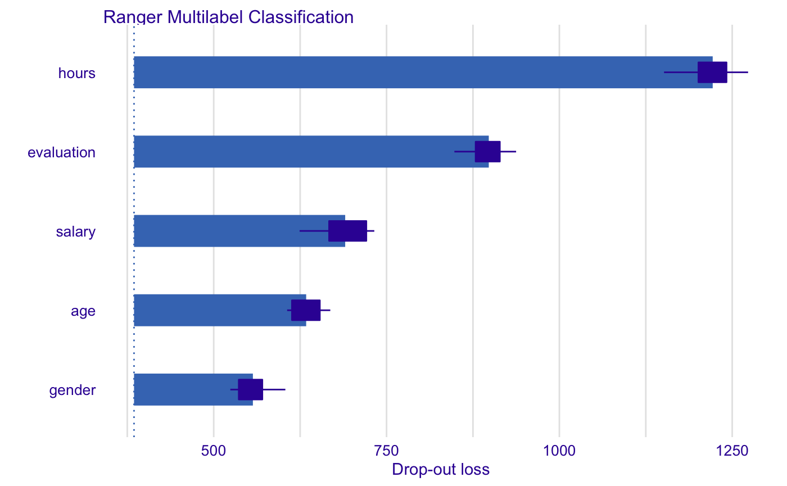
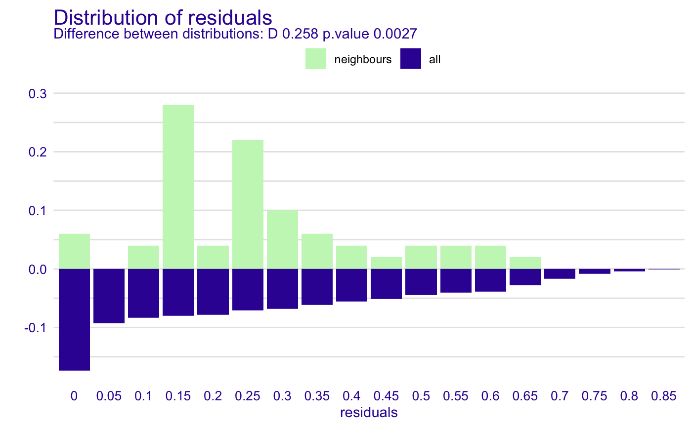
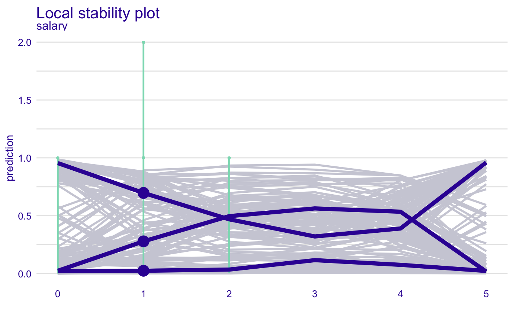

vignettes/multilabel_classification.Rmd
multilabel_classification.RmdIn the following vignette we will march through multilabel classification with DALEX. Purpose of of this examples is that for some of DALEX functionalities binary cliassification is default one, and therefore we need to put some self-made code to work here. All of examples will be performed with HR dataset that is available with DALEX, it’s target column is status with three level factor. For all cases our model will be ranger.
#> gender age hours evaluation salary status
#> 1 male 32.58267 41.88626 3 1 fired
#> 2 female 41.21104 36.34339 2 5 fired
#> 3 male 37.70516 36.81718 3 0 fired
#> 4 female 30.06051 38.96032 3 2 fired
#> 5 male 21.10283 62.15464 5 3 promoted
#> 6 male 40.11812 69.53973 2 0 firedOk, now it is time to create a model.
library("ranger")
model_HR_ranger <- ranger(status~., data = HR, probability = TRUE, num.trees = 50)
model_HR_ranger#> Ranger result
#>
#> Call:
#> ranger(status ~ ., data = HR, probability = TRUE, num.trees = 50)
#>
#> Type: Probability estimation
#> Number of trees: 50
#> Sample size: 7847
#> Number of independent variables: 5
#> Mtry: 2
#> Target node size: 10
#> Variable importance mode: none
#> Splitrule: gini
#> OOB prediction error (Brier s.): 0.2178329library("DALEX")
explain_HR_ranger <- explain(model_HR_ranger,
data = HR[,-6],
y = HR$status,
label = "Ranger Multilabel Classification",
colorize = FALSE)#> Preparation of a new explainer is initiated
#> -> model label : Ranger Multilabel Classification
#> -> data : 7847 rows 5 cols
#> -> target variable : 7847 values
#> -> target variable : Please note that 'y' is a factor. ( WARNING )
#> -> target variable : Consider changing the 'y' to a logical or numerical vector.
#> -> target variable : Otherwise I will not be able to calculate residuals or loss function.
#> -> model_info : package ranger , ver. 0.11.2 , task classification ( default )
#> -> predict function : yhat.ranger will be used ( default )
#> -> predicted values : predict function returns multiple columns: 3 ( WARNING ) some of functionalities may not work
#> -> residual function : difference between y and yhat ( default )
#> -> residuals : numerical, min = NA , mean = NA , max = NA
#> A new explainer has been created!Ofcourse sixth column, that we have omitted during creation of explainer, stands for target column (status) and it is good practice not to put it in data. Keep in mind that default yhat function for ranger and for any other package that is supported by DALEX, enforces probability output. Therfore residuals are NA since we didn’t provide residual function meaningful for factors and probability matrix.
In order to use variable_importance() function it is necessary to switch default loss_function argument to one that handle multiple classes. DALEX has one function like that implemented and it is called loss_cross_entropy(). To use this, y parameter passed to explain function should be numeric vector that encodes classes to positive integers. See example below.
#> [1] 1 1 1 1 3 1 3 2 1 3Also we need probability outputs so there is no need to change deafult predict_function parameter.
library("DALEX")
explain_HR_ranger_new_y <- explain(model_HR_ranger,
data = HR[,-6],
y = y_HR,
label = "Ranger Multilabel Classification",
colorize = FALSE)#> Preparation of a new explainer is initiated
#> -> model label : Ranger Multilabel Classification
#> -> data : 7847 rows 5 cols
#> -> target variable : 7847 values
#> -> model_info : package ranger , ver. 0.11.2 , task classification ( default )
#> -> predict function : yhat.ranger will be used ( default )
#> -> predicted values : predict function returns multiple columns: 3 ( WARNING ) some of functionalities may not work
#> -> residual function : difference between y and yhat ( default )
#> -> residuals : numerical, min = 0.002911343 , mean = 1.655962 , max = 3
#> A new explainer has been created!And now we can use variable_importance()

As we see above, we can enjoy perfectly fine variable importance plot.
There is no need for tricks in order to use variable_effect(). Our target will be one-hot-encoded, and all of explantions will be performed for each of class separately.
As above, variable_attribution() works perfectly fine with multilabel classification and default explainer. Just like before, our target will be splitted into variables standing for each factor level and computations will be performed then.
Those two function are merged into one paragraph becasue they require same action in order to get them work with multilabel classification. The most important thing here is to realise that both function are based on residuals. Therfore we need proper residual_function. Let’s assume for purpose of that vignette that residual is one minus probability that true class has.
residual_function <- function(model, data, y) {
y_char <- as.character(y)
pred <- predict(model, data, probability = TRUE)$predictions
res <- c()
for (i in 1:nrow(pred)) {
res[i] <- 1-pred[i, y_char[i]]
}
res
}Now we can create and explainer and pass our brand new residual_function to it.
explain_HR_ranger_residual <- explain(model_HR_ranger,
data = HR[,-6],
y = HR$status,
label = "Ranger Multilabel Classification",
residual_function = residual_function,
colorize = FALSE)#> Preparation of a new explainer is initiated
#> -> model label : Ranger Multilabel Classification
#> -> data : 7847 rows 5 cols
#> -> target variable : 7847 values
#> -> target variable : Please note that 'y' is a factor. ( WARNING )
#> -> target variable : Consider changing the 'y' to a logical or numerical vector.
#> -> target variable : Otherwise I will not be able to calculate residuals or loss function.
#> -> model_info : package ranger , ver. 0.11.2 , task classification ( default )
#> -> predict function : yhat.ranger will be used ( default )
#> -> predicted values : predict function returns multiple columns: 3 ( WARNING ) some of functionalities may not work
#> -> residual function : residual_function
#> -> residuals : numerical, min = 0 , mean = 0.2784904 , max = 0.8926369
#> A new explainer has been created!
rd_salary <- residuals_distribution(explain_HR_ranger_residual, HR[1,], variables = "salary")
plot(rd_salary) # Session info
#> R version 3.6.1 (2019-07-05)
#> Platform: x86_64-apple-darwin15.6.0 (64-bit)
#> Running under: macOS Catalina 10.15.3
#>
#> Matrix products: default
#> BLAS: /Library/Frameworks/R.framework/Versions/3.6/Resources/lib/libRblas.0.dylib
#> LAPACK: /Library/Frameworks/R.framework/Versions/3.6/Resources/lib/libRlapack.dylib
#>
#> locale:
#> [1] en_US.UTF-8/en_US.UTF-8/en_US.UTF-8/C/en_US.UTF-8/en_US.UTF-8
#>
#> attached base packages:
#> [1] stats graphics grDevices utils datasets methods base
#>
#> other attached packages:
#> [1] ranger_0.11.2 DALEX_0.9.4
#>
#> loaded via a namespace (and not attached):
#> [1] Rcpp_1.0.3 gower_0.2.1 compiler_3.6.1 pillar_1.4.3
#> [5] ingredients_0.5.2 tools_3.6.1 digest_0.6.23 lattice_0.20-38
#> [9] evaluate_0.14 memoise_1.1.0 lifecycle_0.1.0 tibble_2.1.3
#> [13] gtable_0.3.0 pkgconfig_2.0.3 rlang_0.4.2 Matrix_1.2-17
#> [17] rstudioapi_0.10 yaml_2.2.0 pkgdown_1.4.1 xfun_0.11
#> [21] stringr_1.4.0 dplyr_0.8.3 knitr_1.26 desc_1.2.0
#> [25] fs_1.3.1 rprojroot_1.3-2 grid_3.6.1 tidyselect_0.2.5
#> [29] glue_1.3.1 R6_2.4.1 iBreakDown_0.9.9 rmarkdown_1.16
#> [33] farver_2.0.3 ggplot2_3.2.1 purrr_0.3.3 magrittr_1.5
#> [37] backports_1.1.5 scales_1.1.0 htmltools_0.4.0 MASS_7.3-51.4
#> [41] assertthat_0.2.1 colorspace_1.4-1 labeling_0.3 stringi_1.4.5
#> [45] lazyeval_0.2.2 munsell_0.5.0 crayon_1.3.4